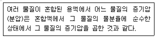
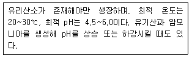
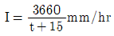
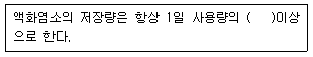
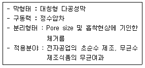
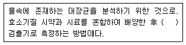
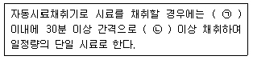
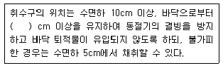
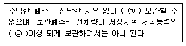
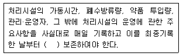

수질환경기사 (2021-03-07 기출문제)
1과목: 수질오염개론
1. 미생물 중 세균(Bacteria)에 관한 특징으로 가장 거리가 먼 것은?
- 원시적 엽록소를 이용하여 부분적인 탄소동화작용을 한다.
- 용해된 유기물을 섭취하며 주로 세포분열로 번식한다.
- 수분 80%, 고형물 20% 정도로 세포가 구성되면 고형물 중 유기물이 90%를 차지한다.
- pH, 온도에 대하여 민감하며, 열보다 낮은 온도에서 저항성이 높다.
(정답률: 82%)

2. 하천 수질모델 중 WQRRS에 관한 설명으로 가장 거리가 먼 것은?
- 하천 및 호수의 부영양화를 고려한 생태계 모델이다.
- 유속, 수림, 조도계수에 의해 확산계수를 결정한다.
- 호수에는 수심별 1차원 모델이 적용된다.
- 정적 및 동적인 하천의 수질, 수문학적 특성이 광범위하게 고려된다.
(정답률: 69%)
3. 농업용수의 수질을 분석할 때 이용되는 SAR(Sodium Adsorption Ratio)과 관계없는 것은?
- Na+
- Mg2+
- Ca2+
- Fe2+
(정답률: 85%)
4. 다음이 설명하는 일반적 기체 법칙은?

- 라울트의 법칙
- 게이-루삭의 법칙
- 헨리의 법칙
- 그레함의 법칙
(정답률: 69%)
5. 우리나라의 수자원 이용현황 중 가장 많은 용도로 사용하는 용수는?
- 생활용수
- 공업용수
- 농업용수
- 유지용수
(정답률: 86%)
6. 2차처리 유출수에 함유된 10mg/L의 유기물을 활성탄흡착법으로 3차처리하여 농도가 1mg/L인 유출수를 얻고자 한다. 이 때 폐수 1L당 필요한 활성탄의 양(g)은? (단, Freundlich 등온식 사용, K = 0.5, n = 2)
- 9
- 12
- 16
- 18
(정답률: 43%)
7. 원생동물(Protozoa)의 종류에 관한 내용으로 옳은 것은?
- Paramecia는 자유롭게 수영하면서 고형물질을 섭취한다.
- Vorticella는 불량한 활성슬러지에서 주로 발견된다.
- Sarcodina는 나팔의 입에서 물흐름을 일으켜 고형물질만 걸러서 먹는다.
- Suctoria는 몸통으로 움직이면서 위족으로 고형물질을 몸으로 싸서 먹는다.
(정답률: 68%)
8. 다음 설명과 가장 관계있는 것은?

- 박테리아
- 균류
- 조류
- 원생동물
(정답률: 72%)
9. 산과 염기의 정의에 관한 설명으로 옳지 않은 것은?
- Arrhenius는 수용액에서 수산화이온을 내어 놓는 물질을 염기라고 정의하였다.
- Lewis는 전자쌍을 받는 화학종을 염기라고 정의하였다.
- Arrhenius는 수용액에서 양성자를 내어 놓은 것을 산이라고 정의하였다.
- Brӧnsted-Lowry는 수용액에서 양성자를 내어주는 물질을 산이라고 정의하였다.
(정답률: 63%)
10. 25℃, 4atm의 압력에 있는 메탄가스 15kg을 저장하는 데 필요한 탱크의 부피(m3)는? (단, 이상기체의 법칙 적용, 표준상태 기준, R = 0.082L·atm/mol·K)
- 4.42
- 5.73
- 6.54
- 7.45
(정답률: 61%)
11. 글루코스(C6H12O6) 1000mg/L를 혐기성 분해시킬 때 생산되는 이론적 메탄량(mg/L)은?
- 227
- 247
- 267
- 287
(정답률: 71%)
12. 유기화합물에 대한 설명으로 옳지 않은 것은?
- 유기화합물들은 일반적으로 녹는 점과 끓는 점이 낮다.
- 유기화합물들은 하나이 분자식에 대하여 여러 종류의 화합물이 존재할 수 있다.
- 유기화합물들은 대체로 이온 반응보다는 분자반응을 하므로 반응속도가 빠르다.
- 대부분의 유기화합물은 박테리아의 먹이가 될 수 있다.
(정답률: 81%)
13. Colloid 중에서 소량의 전해질에서 쉽게 응집이 일어나는 것으로써 주로 무기물질의 Colloid?
- 서스펜션 Colloid
- 에멀션 Colloid
- 친수성 Colloid
- 소수성 Colloid
(정답률: 69%)
14. 열수 배출에 의한 피해연상으로 가장 거리가 먼 것은?
- 발암물질 생성
- 부영양화
- 용존산소의 감소
- 어류의 폐사
(정답률: 67%)
15. 피부점막, 호흡기로 흡입되어 국소 및 전신마비, 피부염, 색소 침착을 일으키며 안료, 색소, 유리공업 등이 주요 발생원인 중금속은?
- 비소
- 납
- 크롬
- 구리
(정답률: 72%)
16. BOD가 2000 mg/L인 폐수를 제거율 85%로 처리한 후 몇 배 희석하면 방류수 기준에 맞는가? (단, 방류수 기준은 40mg/L이라고 가정)
- 4.5배 이상
- 5.5배 이상
- 6.5배 이상
- 7.5배 이상
(정답률: 62%)
17. 수은주 높이 150mm는 수주로 몇 mm인가?
- 약 2040
- 약 2530
- 약 3240
- 약 3530
(정답률: 60%)
18. 하천의 탈산소계수를 조사한 결과 20℃에서 0.19/day이었다. 하천수의 온도가 25℃로 증가되었다면 탈산소계수(/day)는? (단, 온도보정계수 = 1.047)
- 0.22
- 0.24
- 0.26
- 0.28
(정답률: 67%)
19. 호소수의 전도현상(Turnover)이 호소수 수질환경에 치는 영향을 설명한 내용 중 옳지 않은 것은?
- 수괴의 수직운동 촉진으로 호소 내 환경용량이 제한되어 물의 자정능력이 감소된다.
- 심층부까지 조류의 혼합이 촉진되어 상수원의 취수 심도에 영향을 끼치게 되므로 수도의 수질이 악화된다.
- 심층부의 영양염이 상승하게 됨에 따라 표층부에 규조류가 번성하게 되어 부영양화가 촉진된다.
- 조류의 다량 번식으로 물의 탁도가 증가되고 여과지가 폐색되는 등의 문제가 발생한다.
(정답률: 68%)
20. 적조 현상에 관한 설명으로 틀린 것은?
- 수괴의 연직안정도가 작을 때 발생한다.
- 강우에 따른 하천수의 유입으로 해수의 염분량이 낮아지고 영양염류가 보급될 때 발생한다.
- 적조조류에 의한 아가미 폐색과 어류의 호흡장애가 발생한다.
- 수중 용존산소 감소에 의한 어패류의 폐사가 발생한다.
(정답률: 69%)
2과목: 상하수도계획
21.

, 면적 2.0km2, 유입시간 6분, 유출계수 C = 0.65, 관내유속이 1m/sec인 경우, 관길이 600m인 하수관에서 흘러나오는 우수량(m3/sec)은? (단, 합리식 적용)- 약 31
- 약 38
- 약 43
- 약 52
(정답률: 61%)
22. 우수배제계획의 수립 중 우수유출량의 억제에 대한 계획으로 옳지 않은 것은?
- 우수유출량의 억제방법은 크게 우수저류형, 우수침투형 및 토지이용의 계획적관리로 나눌 수 있다.
- 우수저류형 시설 중 On-site 시설은 단지 내 저류, 우수조정지, 우수체수지 등이 있다.
- 우수침투형은 우수를 지중에 침투시키므로 유수유출총량을 감소시키는 효과를 발휘한다.
- 우수저류형은 우수유출총량은 변하지 않으나 첨두유출량을 감소시키는 효과가 있다.
(정답률: 70%)
23. 수원에 관한 설명으로 틀린 것은?
- 복류수는 대체로 수질이 양호하며 대개의 경우 침전지를 생략하는 경우도 있다.
- 용천수는 지하수가 종종 자연적으로 지표에 나타난 것으로 그 성질은 대개 지표수와 비슷하다.
- 우리나라의 일반적인 하천수는 연수인 경우가 많으므로 침전과 여과에 의하여 용이하게 정화되는 경우도 많다.
- 호소수는 하천의 유수보다 자정작용이 큰 것이 특징이다.
(정답률: 51%)
24. 하수처리공법 중 접촉산화법에 대한 설명으로 틀린 것은?
- 반송슬러지가 필요하지 않으므로 운전관리가 용이하다.
- 생물상이 다양하여 처리효과가 안정적이다.
- 부착생물량의 임의 조정이 어려워 조작조건 변경에 대응하기 쉽지 않다.
- 접촉제가 조 내에 있기 때문에 부착생물량의 확인 어렵다.
(정답률: 59%)
25. 분류식 하수배제방식에서, 펌프장시설의 계획하수량 결정 시 유입·방류펌프장 계획하수량으로 옳은 것은?
- 계획시간최대오수량
- 계획우수량
- 우천시계획오수량
- 계획일최대오수량
(정답률: 55%)
26. 24시간 이상 장시간의 강우강도에 대해 가까운 저류시설 등을 계획할 경우에 적용하는 강우강도식은?
- Cleveland형
- Japanese형
- Talbot형
- Sherman형
(정답률: 69%)
27. 계획오수량에 관한 설명으로 틀린 것은?(오류 신고가 접수된 문제입니다. 반드시 정답과 해설을 확인하시기 바랍니다.)
- 지하수량은 1인1일최대오수량의 10~20%로 한다.
- 계획시간최대오수량은 계획1일 최대오수량의 1시간당 수량의 1.3~1.8배를 표준으로 한다.
- 합류식에서 우천 시 계획오수량은 원칙적으로 계획시간최대오수량의 3배 이상으로 한다.
- 계획1일평균오수량은 계획1일최대오수량의 50~60%를 표준으로 한다.
(정답률: 67%)
28. 길이 1.2km의 하수관이 2‰의 경사로 매설되어 있을 경우, 이 하수관 양 끝단간의 고저차(m)는? (단, 기타 사항은 고려하지 않음)
- 0.24
- 2.4
- 0.6
- 6.0
(정답률: 65%)
29. 비교회전도(Ns)에 대한 설명 중 틀린 것은?
- 펌프의 규정 회전수가 증가하면 비교회전도도 증가한다.
- 펌프의 규정양정이 증가하면 비교회전도는 감소한다.
- 일반적으로 비교회전도가 크면 유량이 많은 저양정의 펌프가 된다.
- 비교회전도가 크게 될수록 흡입성능이 좋아지고 공동현상 발생이 줄어든다.
(정답률: 67%)
30. 상수처리를 위한 약품침전지의 구성과 구조로 틀린 것은?
- 슬러지의 퇴적심도로서 30cm 이상을 고려한다.
- 유효수심은 3~5.5m로 한다.
- 침전지 바닥에는 슬러지 배제에 편리하도록 배수구를 향하여 경사지게 한다.
- 고수위에서 침전지 벽체 상단까지의 여유고는 10cm 정도로 한다.
(정답률: 64%)
31. 상수도 급수배관에 관한 설명으로 틀린 것은?
- 급수관을 공공도로에 부설할 경우에는 도로 관리자가 정한 점용위치와 깊이에 따라 배관해야 하며 다른 매설물과의 간격을 30cm 이상 확보한다.
- 급수관을 부설하고 되메우기를 할 때에는 양질토 또는 모래를 사용하여 적절하게 다짐하여 관을 보호한다.
- 급수관이 개거를 횡단하는 경우에는 가능한 한 개거의 위로 부설한다.
- 동결이나 결로의 우려가 있는 급수설비의 노출부분에 대해서는 적절한 방한조치나 결로방지조치를 강구한다.
(정답률: 72%)
32. 하수처리시설의 계획유입수질 산정방식으로 옳은 것은?
- 계획오염부하량을 계획1일평균오수량으로 나누어 산정한다.
- 계획오염부하량을 계획시간평균오수량으로 나누어 산정한다.
- 계획오염부하량을 계획1일최대오수량으로 나누어 산정한다.
- 계획오염부하량을 계획시간최대오수량으로 나누어 산정한다.
(정답률: 58%)
33. 하수시설에서 우수조정지 구조형식이 아닌 것은?
- 댐식(제방높이 15m 미만)
- 저하식(관내 저류 포함)
- 굴착식
- 유하식(자연 호소포함)
(정답률: 50%)
34. 하수관로 개·보수계획 수립 시 포함되어야 할 사항이 아닌 것은?
- 불명수량 조사
- 개·보수 우선순위의 결정
- 개·보수공사 범위의 설정
- 주변 인근 신설관로 현황 조사
(정답률: 63%)
35. 펌프의 회전수 N = 2400rpm, 최고 효율점의 토출량 Q = 162m3/hr, 전양정 H = 90m인 우너심펌프의 비회전도는?
- 약 115
- 약 125
- 약 135
- 약 145
(정답률: 56%)
36. 집수정에서 가정까지의 급수계통을 순서적으로 나열한 것으로 옳은 것은?
- 취수 → 도수 → 정수 → 송수 → 배수 →급수
- 취수 → 도수 → 정수 → 배수 → 송수 →급수
- 취수 → 송수 → 도수 → 정수 → 배수 →급수
- 취수 → 송수 → 배수 → 정수 → 도수 →급수
(정답률: 72%)
37. 표준활성슬러지법에 관한 설명으로 잘못된 것은?
- 수리학적체류시간(HRT)은 6~8시간을 표준으로 한다.
- 수리학적체류시간(HRT)은 계획하수량에 따라 결정하며, 반송슬러지량을 고려한다.
- MLSS농도는 1500~2500mg/L를 표준으로 한다.
- MLSS농도가 너무 높으면 필요산소량이 증가하거나 이차침전지의 침전효율이 악화될 우려가 있다.
(정답률: 50%)
38. 계획취수량을 확보하기 위하여 필요한 저수용량의 결정에 사용하는 계획 기준년은?
- 원칙적으로 5개년에 제1위 정도의 갈수를 표준으로 한다.
- 원칙적으로 7개년에 제1위 정도의 갈수를 표준으로 한다.
- 원칙적으로 10개년에 제1위 정도의 갈수를 표준으로 한다.
- 원칙적으로 15개년에 제1위 정도의 갈수를 표준으로 한다.
(정답률: 74%)
39. 상수의 소독(살균)설비 중 저장설비에 관한 내용으로 ( )에 가장 적합한 것은?

- 5일분
- 10일분
- 15일분
- 30일분
(정답률: 59%)
40. 상수도 시설 중 완속여과지의 여과속도 표준 범위는?
- 4~5 m/day
- 5~15 m/day
- 15~25 m/day
- 25~50 m/day
(정답률: 62%)
3과목: 수질오염방지기술
41. 반지름이 8cm인 원형 관로에서 유체의 유속이 20m/sec일 때 반지름이 40cm인 곳에서의 유속(m/sec)은? (단, 유량 동일, 기타 조건은 고려하지 않음)
- 0.8
- 1.6
- 2.2
- 3.4
(정답률: 56%)
42. 농도 4000mg/L인 포기조내 활성슬러지 1L를 30분간 정치시켰을 때, 침강슬러지 부피가 40%를 차지하였다. 이 때 SDI는?
- 1
- 2
- 10
- 100
(정답률: 35%)
43. 질산화 반응에 의한 알칼리도의 변화는?
- 감소한다.
- 증가한다.
- 변화하지 않는다.
- 증가 후 감소한다.
(정답률: 59%)
44. 하수처리를 위한 회전 원판법에 관한 설명으로 틀린 것은?
- 질산화가 일어나기 쉬우며 pH가 저하되는 경우가 있다.
- 원판의 회전으로 인해 부착생물과 회전판 사이에 전단력이 생긴다.
- 살수여상과 같이 여상에 파리는 발생하지 않으나 하루살이가 발생하는 수가 있다.
- 활성슬러지법에 비해 이차침전지 SS 유출이 적어 처리수의 투명도가 좋다.
(정답률: 59%)
45. 길이:폭 비가 3:1인 장방형 침전조에 유량 850m3/day의 흐름이 도입된다. 깊이는 4.0m, 체류 시간은 2.4hr이라면 표면부하율(m3/m2·day)은? (단, 흐름은 침전조 단면적에 균일하게 분배된다고 가정)
- 20
- 30
- 40
- 50
(정답률: 52%)
46. 반송슬러지의 탈인 제거 공정에 관한 설명으로 틀린 것은?
- 탈인조 상징액은 유입수량에 비하여 매우 작다.
- 인을 침전시키기 위해 소요되는 석회의 양은 순수 화학처리방법보다 적다.
- 유입수의 유기물 부하에 따른 영향이 크다.
- 대표적인 인 제거공법으로는 phostrip process가 있다.
(정답률: 38%)
47. 다음에서 설명하는 분리방법으로 가장 적합한 것은?

- 역삼투
- 한외여과
- 정밀여과
- 투석
(정답률: 64%)
48. 탈기법을 이용, 폐수 중의 암모니아성 질소를 제거하기 위하여 폐수의 pH를 조절하고자 한다. 수중 암모니아를 NH3(기체분자의 형태) 98%로 하기 위한 pH는? (단, 암모니아성 질소의 수중에서의 평형은 다음과 같다. NH3 + H2O ↔ NH4+ + OH-, 평형상수 K = 1.8×10-5)
- 11.25
- 11.03
- 10.94
- 10.62
(정답률: 29%)
49. 폐수의 고도처리에 관한 다음의 기술 중 옳지 않은 것은?
- CI-, SO42- 등의 무기염류의 제거에는 전기투석법이 이용된다.
- 활성탄 흡착법에서 폐수 중의 인산은 제거되지 않는다.
- 모래여과법은 고도처리 중에서 흡착법이나 전기투석법의 전처리로써 이용된다.
- 폐수 중의 무기성질소 화합물은 철염에 의한 응집침전으로 완전히 제거된다.
(정답률: 49%)
50. 용수 응집시설의 급속 혼합조를 설계하고자 한다. 혼합조의 설계유량은 18480m3/day이며 정방형으로 하고 깊이는 폭의 1.25로 한다면 교반을 위한 필요 동력(kW)은? (단, μ=0.00131N·s/m2, 속도 구배 = 900 sec-1, 체류시간 30초)
- 약 4.3
- 약 5.6
- 약 6.8
- 약 7.3
(정답률: 39%)
51. 침전하는 입자들이 너무 가까이 있어서 입자간의 힘이 이웃입자의 침전을 방해하게 되고 동일한 속도로 침전하며 최종침전지 중간 정도의 깊이에서 일어나는 침전형태는?
- 지역침전
- 응집침전
- 독립침전
- 압축침전
(정답률: 65%)
52. 살수여상 공정으로부터 유출되는 유출수의 부유 물질을 제거하고자 한다. 유출수의 평균 유량은 12300m3/day, 여과자의 여과속도는 17L/m2·min이고 4개의 여과지(병렬기준)를 설계하고자 할 때 여과지 하나의 면적(m2)은?
- 약 75
- 약 100
- 약 125
- 약 150
(정답률: 54%)
53. 폐수량 500m3/day, BOD 300mg/L인 폐수를 표준활성슬러지공법으로 처리하여 최종방류수 BOD 농도를 20mg/L이하로 유지하고자 한다. 최초침전지 BOD 제거효율이 30%일 때 포기조와 최종침전지, 즉 2차 처리 공정에서 유지되어야 하는 최전 BOD 제거효율(%)은?
- 약 82.5
- 약 85.5
- 약 90.5
- 약 94.5
(정답률: 47%)
54. 하수로부터 인 제거를 위한 화학제의 선택에 영향을 미치는 인자가 아닌 것은?
- 유입수의 인 농도
- 슬러지 처리시설
- 알칼리도
- 다른 처리공정과의 차별성
(정답률: 64%)
55. CSTR 반응조를 일차반응조건으로 설계하고, A의 제거 또는 전환율이 90%가 되게 하고자 한다. 반응상수 k가 0.35/hr일 때 CSTR 반응조의 체류시간(hr)은?
- 12.5
- 25.7
- 32.5
- 43.7
(정답률: 42%)
56. 활성슬러지 공정의 폭기조 내 MLSS 농도 2000mg/L, 폭기조의 용량 5m3, 유입 폐수의 BOD 농도 300 mg/L, 폐수 유량이 15m3/day일 때, F/M 비(kg BOD/kg MLSS·day)는?
- 0.35
- 0.45
- 0.55
- 0.65
(정답률: 55%)
57. 수질 성분이 부식에 미치는 영향으로 틀린 것은?
- 높은 알칼리도는 구리와 납의 부식을 증가시킨다.
- 암모니아는 착화물 형성을 통해 구리, 납 등의 금속용해도를 증가시킬 수 있다.
- 잔류염소는 Ca와 반응하여 금속의 부식을 감소시킨다.
- 구리는 갈바닉 전지를 이룬 배관상에 흠집(구멍)을 야기한다.
(정답률: 59%)
58. Freundlich 등은 흡착식(X/M=KCe1/n)에 대한 설명으로 틀린 것은?
- X는 흡착된 용질의 양을 나타낸다.
- K, n은 상수값으로 평행농도에 적용한 단위에 상관없이 동일하다.
- Ce는 용질의 평형농도(질량/체적)를 나타낸다.
- 한정된 범위의 용질농도에 대한 흡착 평형값을 나타낸다.
(정답률: 56%)
59. 생물학적 인, 질소제거 공정에서 호기조, 무산소조, 혐기조 공정의 주된 역할을 가장 올바르게 설명한 것은? (단, 유기물 제거는 고려하지 않으며, 호기조 - 무산소조 - 혐기조 순서임)
- 질산화 및 인의 과잉 흡수 - 탈질소 - 인의 용출
- 질산화 - 탈질소 및 인의 과잉 흡수 - 인의 용출
- 질산화 및 인의 용출 - 인의 과잉 흡수 - 탈질소
- 질산화 및 인의 용출 - 탈질소 - 인의 과잉 흡수
(정답률: 57%)
60. 호기성 미생물에 의하여 발생되는 반응은?
- 포도당 → 알코올
- 초산 → 메탄
- 아질산염 → 질산염
- 포도당 → 초산
(정답률: 66%)
4과목: 수질오염공정시험기준
61. 측정 항목과 측정 방법에 관한 설명으로 옳지 않은 것은?
- 불소 : 란탄-알리자린 콤프렉손에 의한 착화합물의 흡광도를 측정한다.
- 시안 : pH 12~13의 알칼리성에서 시안이온전극과 비교전극을 사용하여 전위를 측정한다.
- 크롬 : 산성용액에서 다이페닐카바자이드와 반응하여 생성하는 착화합물의 흡광도를 측정한다.
- 망간 : 황산산성에서 과황산칼륨으로 산화하여 생성된 과망간산 이온의 흡광도를 측정한다.
(정답률: 38%)
62. 0.0⑤M-KMnO4 400mL를 조제하려면 KMnO4 약 몇 g을 취해야 하는가? (단, 원자량 K = 39, Mn = 55)
- 약 0.32
- 약 0.63
- 약 0.84
- 약 0.98
(정답률: 52%)
63. 유속-면적법에 의한 하천유량을 구하기 위한 소구간 단면에 있어서의 평균유속 Vm을 구하는 식은? (단, V0.2, V0.4, V0.5, V0.6, V0.8은 각각 수면으로부터 전수심의 20%, 40%, 50%, 60% 80%인 점의 유속이다.)
- 수심이 0.4m 미만일 때 Vm = V0.5
- 수심이 0.4m 미만일 때 Vm = V0.8
- 수심이 0.4m 이상일 때 Vm = (V0.2+V0.8)×1/2
- 수심이 0.4m 이상일 때 Vm = (V0.4+V0.6)×1/2
(정답률: 64%)
64. 용해성 망간을 측정하기 위해 시료를 채취 후 속히 여과해야 하는 이유는?
- 망간을 공침시킬 우려가 있는 현탁물질을 제거하기 위해
- 망간 이온을 접촉적으로 산화, 침전시킬 우려가 있는 이산화망간을 제거하기 위해
- 용존상태에서 존재하는 망간과 침전상태에서 존재하는 망간을 분리하기 위해
- 단시간 내에 석출, 침전할 우려가 있는 콜로이드 상태의 망간을 제거하기 위해
(정답률: 52%)
65. 시안(CN-) 분석용 시료를 보관할 때 20% NaOH 용액을 넣어 pH 12의 알칼리성으로 보관하는 이유는?
- 산성에서는 CN- 이온이 HCN으로 되어 휘산하기 때문
- 산성에서는 탄산염을 형성하기 때문
- 산성에서는 시안이 침전되기 때문
- 산성에서나 중성에서는 시안이 분해 변질되기 때문
(정답률: 53%)
66. 대장균(효소이용정량법) 측정에 관한 내용으로 ( )에 옳은 것은?

- 자외선
- 적외선
- 가시선
- 기전력
(정답률: 55%)
67. 0.025N 과망간산칼륨 표준용액의 농도계수를 구하기 위해 0.025N 수산나트륨 용액 10mL을 정확히 취해 종점까지 적정하는데 0.025N 과망간산칼륨용액이 10.15mL 소요되었다. 0.025N 과망간산칼룸 표준용액의 농도계수(F)는?
- 1.015
- 1.000
- 0.9852
- 0.025
(정답률: 38%)
68. “항량으로 될 때까지 건조한다.”라 함은 같은 조건에서 어느 정도 더 건조시켜 전후 무게차가 g당 0.3mg 이하일 때를 말하는가?
- 30분
- 60분
- 120분
- 240분
(정답률: 56%)
69. 원자흡수분광광도법으로 셀레늄을 측정할 때 수소화셀레늄을 발생시키기 위해 전처리한 시료에 주입하는 것은?
- 염화제일주석 용액
- 아연분말
- 요오드화나트륨 분말
- 수산화나트륨 용액
(정답률: 39%)
70. 알칼리성에서 다이에틸다이티오카르바민산 나트륨과 반응하여 생성하는 황갈색의 킬레이트 화합물을 초산부틸로 추출하여 흡광도 440nm에서 정량하는 측정원리를 갖는 것은? (단, 자외선/가시선 분광법 기준)
- 아연
- 구리
- 크롬
- 납
(정답률: 54%)
71. 복수시료채취방법에 대한 설명으로 ( )에 옳은 것은? (단, 배출허용기준 적합여부 판정을 위한 시료재취 시)

- ㉠ 6시간, ㉡ 2회
- ㉠ 6시간, ㉡ 4회
- ㉠ 8시간, ㉡ 2회
- ㉠ 8시간, ㉡ 4회
(정답률: 57%)
72. 수질연속자동측정기기의 설치방법 중 시료 채취지점에 관한 내용으로 ( )에 옳은 것은?

- 5
- 15
- 25
- 35
(정답률: 58%)
73. BOD 실험에 배양기간 중에 4.0mg/L의 DO소모를 바란다면 BOD 200mg/L로 예상되는 폐수를 실험할 때 300mL BOD 병에 몇 mL 넣어야 하는가?
- 2.0
- 4.0
- 6.0
- 8.0
(정답률: 40%)
74. 기체로마토그래프 검출기에 관한 설명으로 틀린 것은?
- 열전도도검출기는 금속 필라멘트 또는 전기저항체를 검출소자로 한다.
- 수소염이온화검출기의 본체는 수소연소노즐, 이온수집기, 대극, 배기구로 구성된다.
- 알칼리열이온화검출기는 함유할로겐화합물 및 함유황화물을 고감도로 검출할 수 있다.
- 전자포획형검출기는 많은 니트로화합물, 유기금속화합물 등을 선택적으로 검출할 수 있다.
(정답률: 46%)
75. 하천유량 측정을 위한 유속 면적법의 적용범위로 틀린 것은?
- 대규모 하천을 제외하고 가능하면 도섭으로 측정할 수 있는 지점
- 교량 등 구조물 근처에서 측정할 경우 교량의 상류지점
- 합류나 분류되는 지점
- 선정된 유량측정 지점에서 말뚝을 박아 동일 단면에서 유량측정을 수행할 수 있는 지점
(정답률: 55%)
76. 이온크로마토그래피에 관한 설명 중 틀린 것은?
- 물 시료 중 음이온의 정성 및 정량분석에 이용된다.
- 기본구성은 용리액조, 시료 주입부, 펌프, 분리컬럼, 검출기 및 기록계로 되어있다.
- 시료의 주입량은 보통 10~100μL 정도이다.
- 일반적으로 음이온 분석에는 이온교환 검출기를 사용한다.
(정답률: 34%)
77. pH 미터의 유지관리에 대한 설명으로 틀린 것은?
- 전극이 더러워 졌을 때는 유리전극을 묽은 염산에 잠시 담갔다가 증류수로 씻는다.
- 유리전극을 사용하지 않을 때는 증류수에 담가둔다.
- 유지, 그리스 등이 전극표면에 부착되면 유기용매로 적신 부드러운 종이로 전극을 닦고 증류수로 씻는다.
- 전극에 발생하는 조류나 미생물은 전극을 보호하는 작용이므로 떨어지지 않게 주의한다.
(정답률: 59%)
78. 4각 웨어에 의하여 유량을 측정하려고 한다. 웨어의 수두 0.5m, 절단의 폭이 4m이면 유량(m3/분)은? (단, 유량 계수 = 4.8)
- 약 4.3
- 약 6.8
- 약 8.1
- 약 10.4
(정답률: 50%)
79. 배출허용기준 적합여부 판정을 위한 시료채취시 복수시료재취방법 적용을 제외할 수 있는 경우가 아닌 것은?
- 환경오염사고 또는 취약시간대의 환경
- 부득이 복수시료채취방법으로 할 수 없을 경우
- 유량이 일정하며 연속적으로 발생되는 폐수가 방류되는 경우
- 사업장내에서 발생하는 폐수를 회분식 등 간헐적으로 처리하여 방류하는 경우
(정답률: 52%)
80. 총질소 실험방법과 가장 거리가 먼 것은? (단, 수질오염공정시험기준 적용)
- 연속흐름법
- 자외선/가시선 분광법 - 활성탄흡착법
- 자외선/가시선 분광법 - 카드뮴·구리 환원법
- 자외선/가시선 분광법 - 환원증류·킬달법
(정답률: 43%)
5과목: 수질환경관계법규
81. 오염총량관리기본계획에 포함되어야 하는 사항과 가장 거리가 먼 것은?
- 관할 지역에서 배출되는 오염부하량의 총량 및 저감계획
- 해당 지역 개발계획으로 인하여 추가로 배출되는 오염부하량 및 그 저감계획
- 해당 지역별 및 개발계획에 따른 오염부하량의 할당
- 해당 지역 개발계획의 내용
(정답률: 35%)
82. 수질오염물질의 배출허용기준의 지역구분에 해당되지 않는 것은?
- 나지역
- 다지역
- 청정지역
- 특례지역
(정답률: 60%)
83. 폐수처리업자의 준수사항에 관한 설명으로 ( )에 옳은 것은?

- ㉠ 10일 이상, ㉡ 80%
- ㉠ 10일 이상, ㉡ 90%
- ㉠ 30일 이상, ㉡ 80%
- ㉠ 30일 이상, ㉡ 90%
(정답률: 54%)
84. 환경정책기본법령에 의한 수질 및 수생태계 상태를 등급으로 나타내는 경우 ‘좋음’ 등급에 대해 설명한 것은? (단, 수질 및 수생태계 하천의 생활 환경기준)
- 용존산소가 충부하고 오염물질이 거의 없는 청정 상태에 근접한 생태계로 침전 등 간단한 정수처리 후 생활용수로 사용할 수 있음
- 용존산소가 충부하고 오염물질이 거의 없는 청정 상태에 근접한 생태계로 여과·침전 등 간단한 정수처리 후 생활용수로 사용할 수 있음
- 용존산소가 많은 편이고 오염물질이 거의 없는 청정 상태에 근접한 생태계로 여과·침전·살균 등 일반적인 정수처리 후 생활용수로 사용할 수 있음
- 용존산소가 많은 편이고 오염물질이 거의 없는 청정 상태에 근접한 생태계로 활성탄 투입 등 일반적인 정수처리 후 생활용수로 사용할 수 있음
(정답률: 54%)
85. 공공폐수처리시설의 유지·관리기준에 관한 내용으로 ( )에 옳은 내용은?

- 1년간
- 2년간
- 3년간
- 5년간
(정답률: 46%)
86. 다음 중 법령에서 규정하고 있는 기타 수질오염원의 기준으로 틀린 것은?
- 취수능력 10m3/일 이상인 먹는 물 제조시설
- 면적 30000m2 이상인 골프장
- 면적 1500m2 이상인 자동차 폐차장 시설
- 면적 200000m2 이상인 복합물류터미널 시설
(정답률: 54%)
87. 위임업무 보고사항 중 보고 횟수가 다른 업무내용은?
- 폐수처리업에 대한 허가·지도단속실적 및 처리실적 현황
- 폐수위탁·사업장 내 처리현황 및 처리실적
- 기타 수질오염원 현황
- 과징금 부과 실적
(정답률: 40%)
88. 물환경보전법령에 적용되는 용어의 정의로 틀린 것은?
- 폐수무방류배출시설 : 폐수배출시설에서 발생하는 폐수를 해당 사업장에서 수질오염 방지시설을 이용하여 처리하거나 동일 배출시설에 재이용하는 등 공공수력으로 배출하지 아니하는 폐수배출시설을 말한다.
- 수면관리자 : 호소를 관리하는 자를 말하며, 이 경우 동일한 호소를 관리하는 자가 3인 이상인 경우에는 하천법에 의한 하천의 관리청의 자가 수면관리자가 된다.
- 특정수질유해물질 : 사람의 건강, 재산이나 동식물의 생육에 직접 또는 간접으로 위해를 줄 우려가 있는 수질오염물질로서 환경부령이 정하는 것을 말한다.
- 공공수역 : 하천, 호소, 항만, 연안해역, 그밖에 공공용으로 사용되는 환경부령으로 정하는 수로를 말한다.
(정답률: 54%)
89. 대권역 물환경관리계획을 수립하는 경우 포함되어야 할 사항 중 가장 거리가 먼 것은?
- 점오염원, 비점오염원 및 기타수질오염원에서 배출되는 수질오염물질의 양
- 상수원 및 물 이용현황
- 점오염원, 비점오염원 및 기타수질오염원 분포현황
- 점오염원에 확대 계획 및 저감시설 현황
(정답률: 48%)
90. 폐수의 배출시설 설치허가 신청 시 제출해야 할 첨부서류가 아닌 것은?
- 폐수배출공정 흐름도
- 원료의 사용명세서
- 방지시설의 설치명세서
- 배출시설 설치 신고필증
(정답률: 33%)
91. 기본배출부과금 산정 시 적용되는 사업장별 부과계수로 옳은 것은?
- 제1종 사업장(10000m3/day 이상) : 2.0
- 제2종 사업장 : 1.5
- 제3종 사업장 : 1.3
- 제4종 사업장 : 1.1
(정답률: 49%)
92. 수질오염물질 총량관리를 위하여 시·도지사가 오염총량관리기본계획을 수립하여 환경부장관에게 승인을 얻어야 한다. 계획수립 시 포함되는 사항으로 가장 거리가 먼 것은?
- 해당 지역 개발계획의 내용
- 시·도지사가 설치·운영하는 측정망 관리계획
- 관할 지역에서 배출되는 오염부하량이 총량 및 저감계획
- 해당 지역 개발계획으로 인하여 추가로 배출되는 오염부하량 및 그 저감계획
(정답률: 40%)
93. 수질자동측정기기 또는 부대시설의 부착 면제를 받은 대상 사업장이 면제 대상에서 해제된 경우 그 사유가 발생한 날로부터 몇 개월 이내에 수질자동측정기기 및 부대시설을 부착해야 하는가?
- 3개월 이내
- 6개월 이내
- 9개월 이내
- 12개월 이내
(정답률: 25%)
94. 기본배출부과금 산정 시 청정지역 및 가 지역의 지역별 부과계수는?
- 2.0
- 1.5
- 1.0
- 0.5
(정답률: 51%)
95. 사업장별 환경시술인의 자격기준 중 제2종 사업장에 해당하는 환경시술인의 기준은?
- 수질환경기사 1명 이상
- 수질환경산업기사 1명 이상
- 환경기능사 1명 이상
- 2년 이상 수질분야에 근무한 자 1명 이상
(정답률: 59%)
96. 오염총량초과부과금 산정 방법 및 기준에서 적용되는 측정유량(일일유량 산정 시 적용) 단위로 옳은 것은?
- m3/min
- L/min
- m3/sec
- L/sec
(정답률: 57%)
97. 발생폐수를 공공폐수처리시설로 유입하고자 하는 배출시설 설치자는 배수관로 등 배수 설비를 기준에 맞게 설치하여야 한다. 배수 설비의 설치방법 및 구조기준으로 틀린 것은?
- 배수관의 관경은 안지름 150mm 이상으로 하여야 한다.
- 배수관은 우수관과 분리하여 빗물이 혼합되지 아니하도록 설치하여야 한다.
- 배수관 입구에는 유효간격 10mm 이하의 스크린을 설치하여야 한다.
- 배수관의 기점·종점·합류점·굴곡점과 관경·관종이 달라지는 지점에는 유출구를 설치하여야 하며, 직선인 부분에는 내경의 200배 이하의 간격으로 맨홀을 설치하여야 한다.
(정답률: 44%)
98. 방류수 수질기준 초과율별 부과계수의 구분이 잘못된 것은?
- 20% 이상 30% 미만 - 1.4
- 30% 이상 40% 미만 - 1.8
- 50% 이상 60% 미만 - 2.0
- 80% 이상 90% 미만 - 2.6
(정답률: 45%)
99. 폐수배출시설에서 배출되는 수질오염물질의 부유물질량의 배출허용 기준은? (단, 나지역, 1일 폐수배출량 2천세제곱미터 미만 기준)
- 80mg/L 이하
- 90mg/L 이하
- 120mg/L 이하
- 130mg/L 이하
(정답률: 41%)
100. 정당한 사유 없이 공공수역에 분뇨, 가축분뇨, 동물의 사체, 폐기물(지정폐기물 제외) 또는 오니를 버리는 행위를 하여서는 아니 된다. 이를 위반하여 분뇨·가축분뇨 등을 버린 자에 대한 벌칙 기준은?
- 6개월 이하의 징역 또는 5백만원 이하의 벌금
- 1년 이하의 징역 또는 1천만원 이하의 벌금
- 2년 이하의 징역 또는 2천만원 이하의 벌금
- 3년 이하의 징역 또는 3천만원 이하의 벌금
(정답률: 50%)